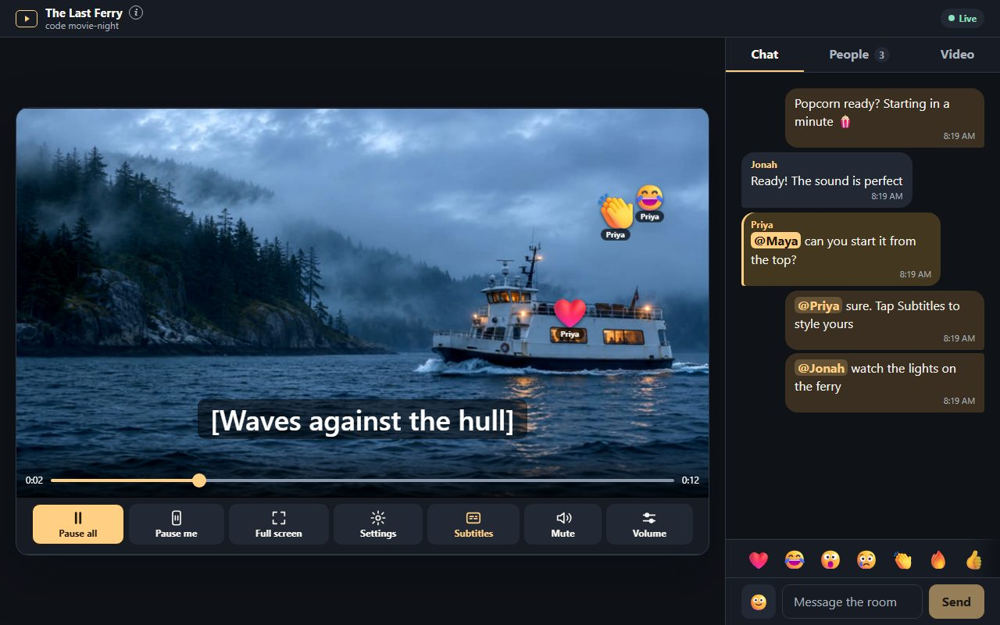
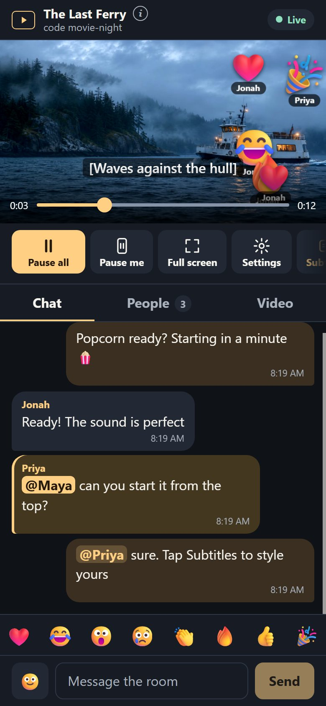
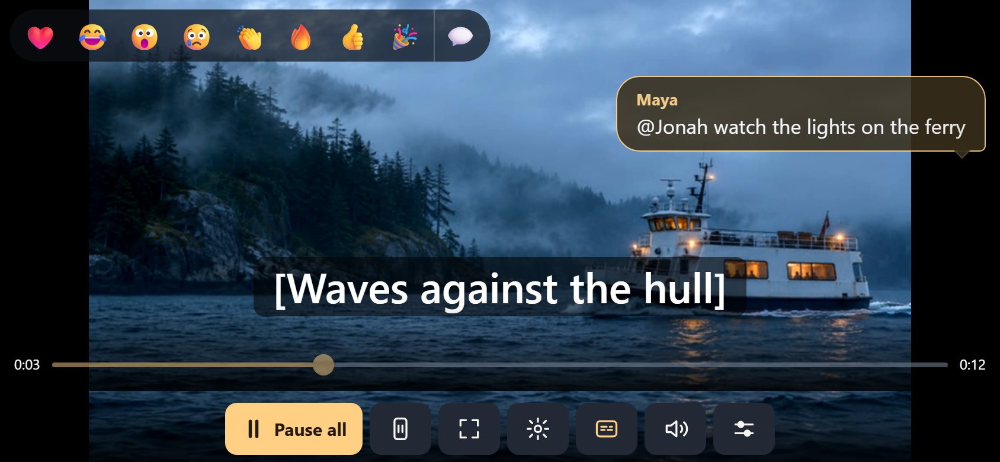
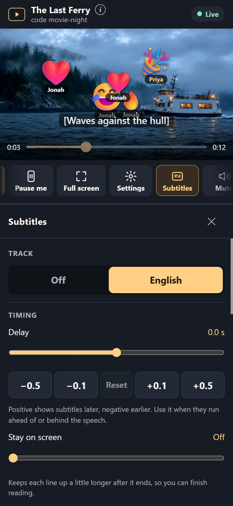
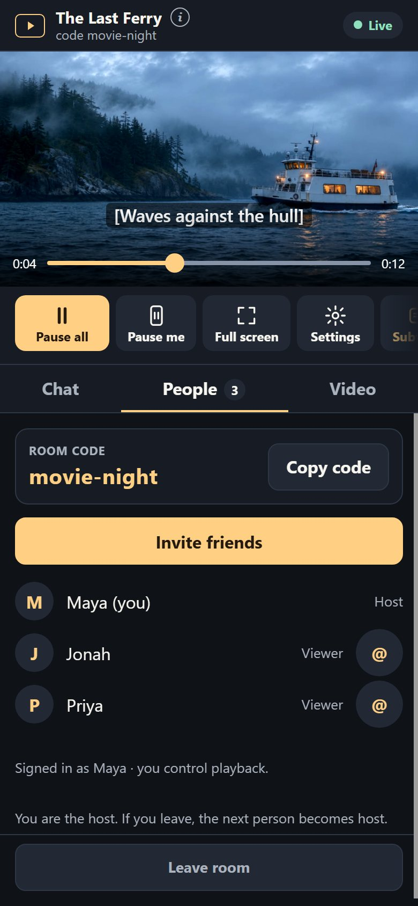
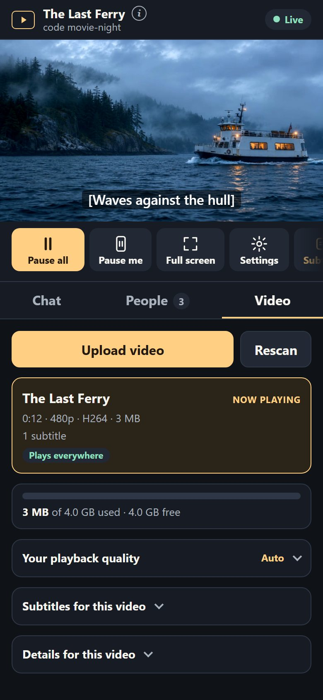
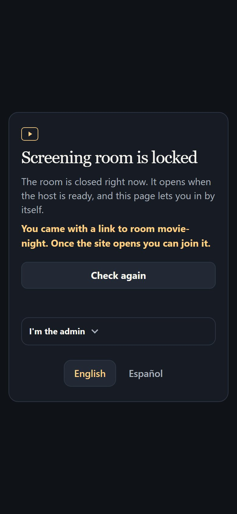
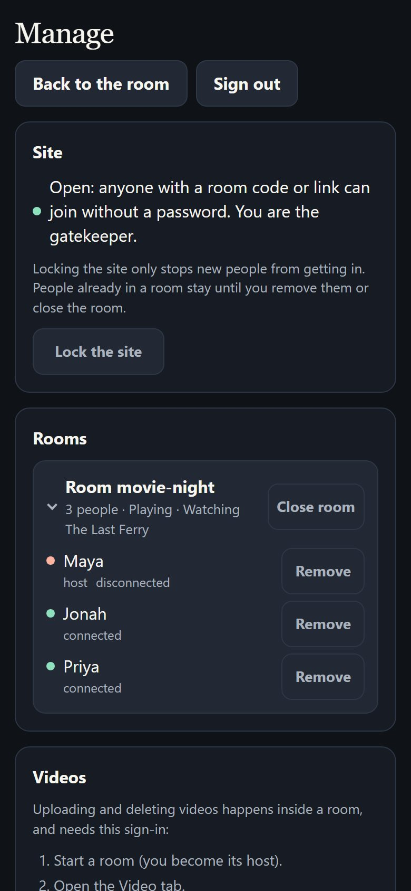

Live updates over SSE
Every viewer keeps one open Server-Sent Events stream. Commands (play, pause, chat, react) are tiny POST requests. No WebSocket: a stream shares one connection with the page and the video, and the browser reconnects by itself.
Open source · self-hosted · private rooms
A self-hosted watch party built for phones. One small server, a folder of videos and a room code: everyone sees the same frame at the same moment.


Real screenshots, taken with the short sample video that ships with the project.






One simulated room with three phones. Start it, pause it, break someone's connection and watch the others. It runs entirely in your browser: no server, no video, nothing is sent anywhere.
A simulation. The room, clocks, network and phones on this page are made up in your browser and follow the rules in the app's source. The 5-minute timeline and the Spanish subtitle track are demo extras: the real sample video is 12 seconds long with English subtitles.
You can change this later. · Puedes cambiarlo después.
This is the first screen of the real app, shown only on a first visit. Here it appears every time, so you can see it. The buttons in the page header change the language too.
Drift is how far each phone is from the room, in milliseconds. Over 180 ms a phone nudges its speed; over 550 ms it jumps. Each simulated phone has its own slightly different clock, which is why the numbers move.
Slow is about 1 Mb/s.
Keyboard: ← and → move between steps, Esc skips the tour.
A small server keeps one shared state per room and tells every phone what changed. Each phone plays the video itself and keeps its own clock honest.
Every viewer keeps one open Server-Sent Events stream. Commands (play, pause, chat, react) are tiny POST requests. No WebSocket: a stream shares one connection with the page and the video, and the browser reconnects by itself.
A play, pause or new member is worked out once per change and handed to everyone. After the first message, a viewer is sent only what changed, not the whole room again.
The app checks that you are in the room and that this is the room's video, then Nginx sends the file: an MP4 with range requests, or HLS segments. The app never carries the video itself.
A phone that reconnects asks for the room's position, opens the video there, and learns how long a seek takes on that device so the next jump lands in the right place.
A mobile-first layout with large tap targets. Settings and subtitles open as sheets that never move the picture, and the layout keeps working when the on-screen keyboard is up.
Full screen turns the phone sideways where the browser allows it. Other people's chat appears as speech bubbles you can tap to answer. (iPhones cannot be forced to rotate.)
Pick a track, then change delay, size, position, colours and outline while you watch. Each viewer keeps their own style.
On adaptive (HLS) videos each person chooses Auto, Data saver or a fixed quality, without affecting anyone else.
A spinner says what is happening, dropped connections are retried, and after 3 seconds the room is told who is buffering. Nothing pauses the room.
@-mentions that stand out for the person named, @everyone, and emoji that drift across the picture for everybody.
Start a room with a code you choose or a random link. Anyone can leave; the next person becomes host. An old link to a closed room offers to start it again.
The site stays closed until the admin opens it; early arrivals wait on a page that lets them in by itself. The admin page lists every room, removes people and closes rooms.
The admin uploads videos from inside a room. The media folder is capped at 4 GB by default, with a usage bar and Delete to make room.
The page notices when a device is struggling and switches to a lighter mode and Data saver. Animations follow the device's reduce-motion setting.
Asked on the first visit and changeable at any time. Everything is translated, including messages from the server.
Every push builds and publishes an image. The guides cover Nginx with HTTPS, updating and rolling back.
One Node process with an embedded database. Everything below was measured on one laptop with the load generator on the same machine, so read the numbers as comparisons, not as server figures.
5 rooms × 20 viewers = 100 live connections for 25 seconds. The hosts play and pause every second, viewers chat about once a second and react about five times a second per room, and about 30 video range requests a second are made: roughly 17,000 events delivered, 840 commands and 690 media requests, far busier than a real watch party.
| Version | CPU seconds (25 s run) | Peak memory |
|---|---|---|
| Before this work | 6.61 | 186 MB |
| After the code changes | 5.61 | 187 MB |
+ --max-old-space-size=160 --max-semi-space-size=2 | 5.86 (a second run: 6.92) | 117 MB (a second run: 109 MB) |
+ --max-semi-space-size=1 | 6.23 | 114 MB |
+ --max-old-space-size=128 --max-semi-space-size=1 | 6.31 | 114 MB |
Reading it: the code changes took about 15% off the CPU (a bit more than the noise). The memory flags took about 38% off the peak for roughly 5 to 10% more CPU, because a small young generation makes the garbage collector run more often. A CPU profile showed the app's own code at only 1.3% of the busy time; the rest is Next.js's per-request machinery and socket writes.
Node compared with Bun, what was changed and how to repeat the test are in the performance notes.
Needs Node 24 or newer and FFmpeg. The site starts locked: sign in as the admin (the password is password until you set ADMIN_PASSWORD), then open the address from any phone on the same network.
git clone https://github.com/monstercameron/synchronized-video-streaming.git
cd synchronized-video-streaming
npm install
npm run media:sample
npm run build && npm run start -- --hostname 0.0.0.0 --port 3000Every push publishes ghcr.io/monstercameron/synchronized-video-streaming. The Docker guide covers a server with Nginx and HTTPS, updating and rolling back.